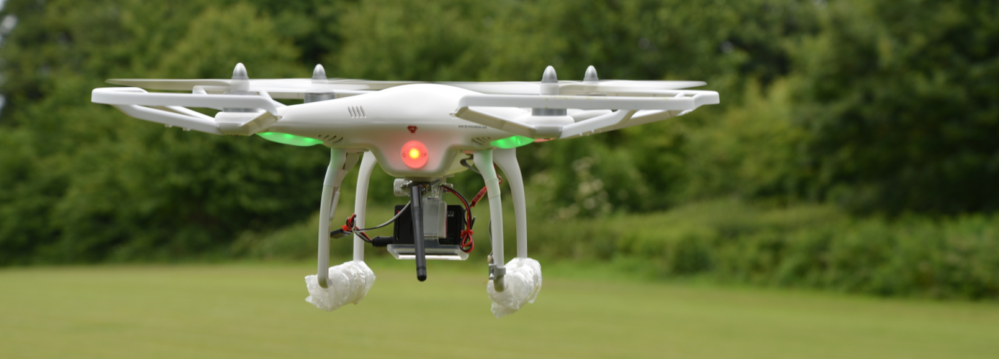

The Jewish Chronicle
A selection of my work published in the Jewish Chronicle including an interview with the founders of Israel's first space programme to the moon.
A selection of my work published in the Jewish Chronicle including an interview with the founders of Israel's first space programme to the moon.
Work across a range of digital media forms including my masters project on Drone Journalism UK, video news features and podcast commentary.
Coverage of the 2013 Malaysia elections and interview with controversial Israeli bible scholar Israel Knohl on the ancient "Gabriel Stone" tablet.
